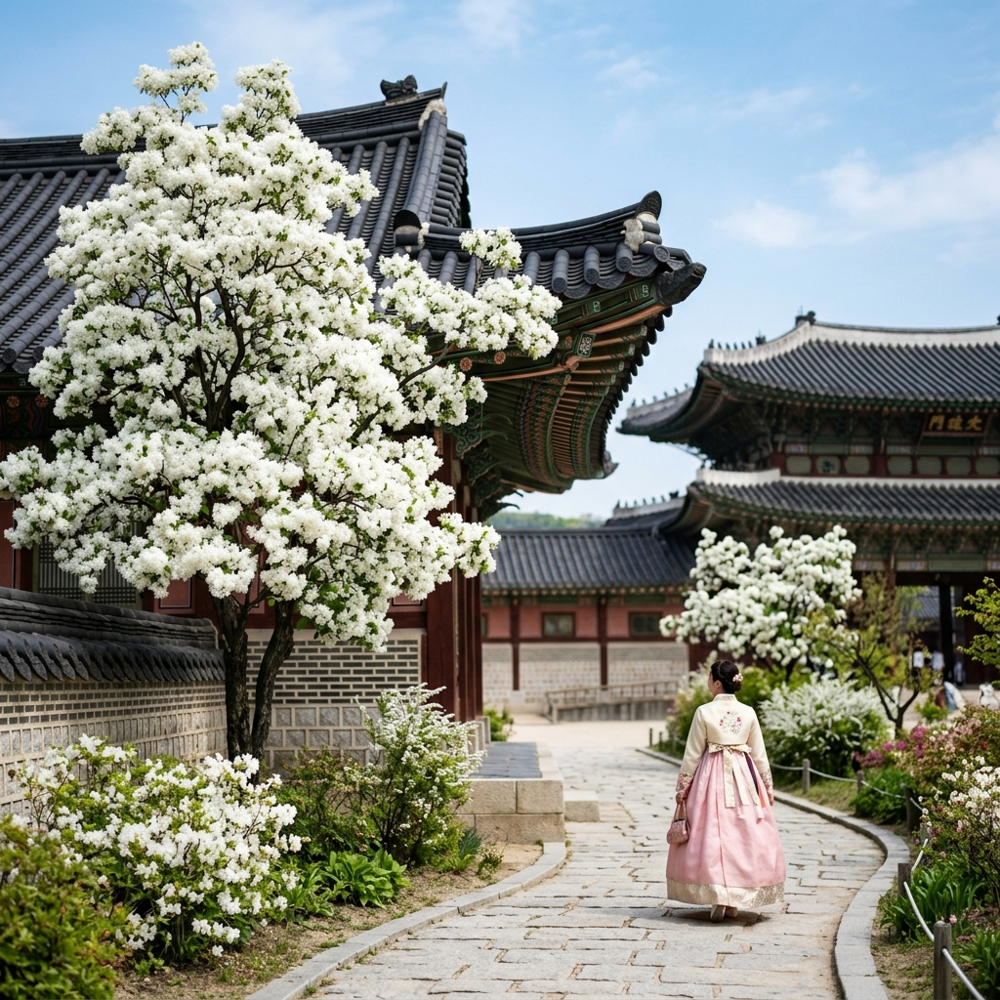
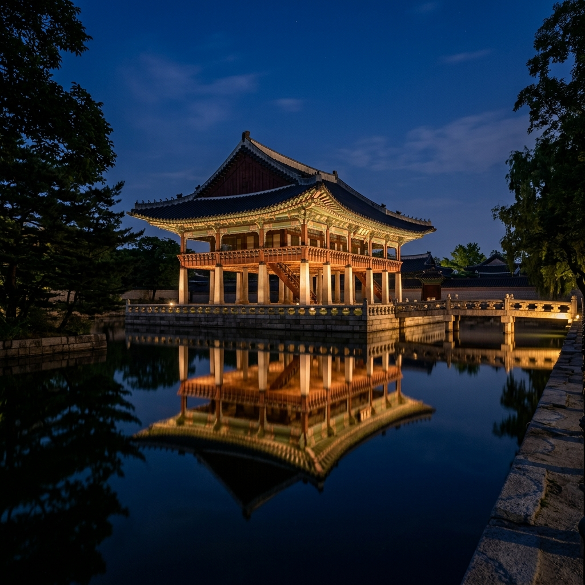
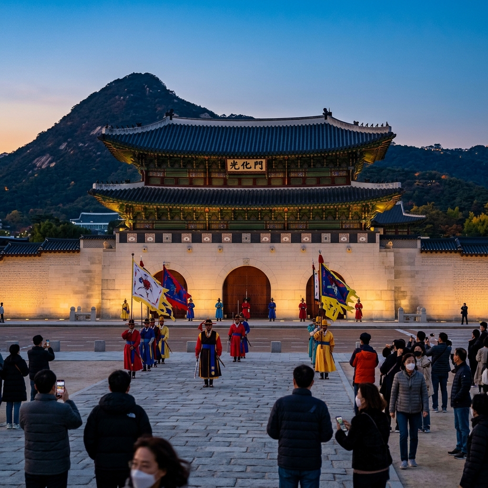

서울 경복궁 이팝나무 2026: 동궁 흰꽃길 만개기 & 광화문 야간 산책 코스 완벽 가이드
경복궁(景福宮). 조선 왕조 500년의 법궁(法宮)이자 서울의 역사적 중심이 되는 이곳이 매년 5월이면 뜻밖의 이유로 수만 명의 발걸음을 이끌어 모읍니다. 바로 이팝나무(Snow White Tree, Chionanthus retusus)의 개화 때문입니다. 경복궁 동궁(東宮, 세자궁) 구역인 자경전(慈慶殿) 주변과 향원정(香遠亭) 인근에 심어진 이팝나무들이 5월 중순을 전후로 새하얀 꽃을 터뜨리면, 고색창연한 궁궐 담장 너머로 솜사탕처럼 하얀 꽃구름이 피어납니다. 가뜩이나 아름다운 경복궁이 이팝나무 개화 시기에는 더욱 환상적인 분위기를 자아냅니다. 광화문 야간 개장 정보까지 함께 정리해 드립니다.
| 항목 | 내용 |
|---|
| 위치 | 서울특별시 종로구 사직로 161 (경복궁) |
| 관람 시간 | 3~5월 09:00~18:00 (입장 마감 17:30) / 야간 개장 별도 |
| 입장료 | 성인 3,000원 / 청소년 1,500원 / 어린이 무료 (한복 착용 시 무료) |
| 이팝나무 개화 예상 | 2026년 5월 8일~20일 (절정 5월 12일~16일 예상) |
| 야간 개장 | 4월 22일~5월 22일 화~일 19:00~22:00 (사전 예약 필수) |
| 교통 | 3호선 경복궁역 5번 출구 도보 5분 / 5호선 광화문역 1번 출구 도보 10분 |
🌿 1. 이팝나무란? — 조선 왕실이 사랑한 하얀 꽃나무
이팝나무는 물푸레나무과에 속하는 낙엽 활엽수로, 학명은 Chionanthus retusus입니다. '이팝(이밥)'이라는 이름은 꽃이 필 때 흰 쌀밥처럼 보인다 하여 붙여졌다는 설과, 입하(立夏, 양력 5월 5~6일)경에 꽃이 핀다 하여 '입하목'이 변형되었다는 설이 있습니다. 높이 10~15m까지 자라는 교목(喬木)으로, 5월에 꽃이 피면 나무 전체가 새하얀 꽃으로 뒤덮여 마치 폭설이 내린 것처럼 보입니다.
이팝나무가 경복궁과 인연을 맺게 된 것은 조선 시대 왕실 조경 문화와 무관하지 않습니다. 순백의 꽃과 우아한 수형(樹形)이 궁궐의 격(格)에 어울린다 하여 조선 후기 왕실 정원에 즐겨 심었다는 기록이 있습니다. 현재 경복궁 내 이팝나무들은 대부분 20세기 이후 복원 정비 과정에서 식재된 것들이지만, 수십 년의 세월을 거쳐 이제는 경복궁 경내에서 계절마다 독보적인 존재감을 발휘하고 있습니다. 이팝나무의 개화 시기는 3~5일로 비교적 짧기 때문에, 방문 타이밍을 놓치면 다음 해를 기약해야 한다는 점이 이 꽃을 더욱 특별하게 만듭니다.
📅 2. 2026년 경복궁 이팝나무 개화 현황 & 최적 방문 시기
2026년 서울 지역 이팝나무 개화는 예년 대비 3~5일 지연될 것으로 예상됩니다. 기상청 자료에 따르면 4월 하순 서울 평균 기온이 예년보다 1.5~2℃ 낮게 형성되었으며, 이는 5월 중순 이팝나무 개화 시기에 직접적인 영향을 미칩니다. 예년 서울 시내 이팝나무 만개 시기가 5월 8일~12일이었다면, 2026년은 5월 12일~16일을 중심으로 절정에 이를 것으로 추정됩니다.
경복궁 이팝나무 개화 상황은 문화재청 궁능유적본부 공식 SNS(인스타그램 @royalpalace_korea)에서 실시간으로 사진이 공유되므로, 방문 전날 반드시 확인하시기 바랍니다. 또한 한국관광공사 대한민국 구석구석(korean.visitkorea.or.kr) 사이트에서도 전국 명소의 실시간 개화 정보를 제공합니다. 개화 정보를 확인한 후 방문하면 빈 손으로 돌아오는 아쉬움을 방지할 수 있습니다.

[경복궁 이팝나무 만개] / AI 제작 이미지
📸 3. 동궁 이팝나무 포토존 완전 공략
경복궁 내 이팝나무 관람 및 촬영의 핵심 구역은 동궁(東宮) 구역입니다. 경복궁 정문인 광화문을 통과해 근정전(勤政殿) 앞마당을 지난 뒤, 동쪽으로 이어지는 자경전(慈慶殿) 방향 통로를 따라가면 이팝나무 포토존이 나타납니다.
주요 이팝나무 포토존을 구체적으로 안내해 드립니다. ①자경전 십장생 굴뚝 앞: 경복궁 내 가장 아름다운 굴뚝으로 손꼽히는 자경전 십장생 굴뚝(보물 제810호) 바로 앞에 이팝나무가 있습니다. 굴뚝의 화려한 장식 문양과 새하얀 이팝나무 꽃이 함께 프레임에 담기는 이 구도는 경복궁 이팝나무 사진 중 가장 독보적인 컷으로 꼽힙니다. ②향원정(香遠亭) 주변: 경복궁 후원에 해당하는 향원정 연못 주변에도 이팝나무가 식재되어 있습니다. 향원정의 섬과 다리(취향교), 연못에 비친 이팝나무의 반영이 어우러지는 이 풍경은 한 폭의 수채화 같습니다. ③건청궁(乾淸宮) 담장 길: 고종 황제와 명성황후가 거처했던 건청궁 담장을 따라 심어진 이팝나무는 담장의 전통 기와와 하얀 꽃이 대조를 이루며 독특한 분위기를 만들어냅니다.
🌙 4. 경복궁 야간 개장 & 광화문 야간 산책 가이드
2026년 봄 경복궁 야간 개장은 4월 22일부터 5월 22일까지 화~일요일 저녁 7시~10시에 진행됩니다. 야간 개장 티켓은 문화재청 궁능유적본부 예약 시스템(ticket.cha.go.kr)에서 온라인 선착순 예매가 가능하며, 1일 최대 입장 인원이 제한되어 있어 인기 일자는 예매 오픈 즉시 마감됩니다. 2026년 5월 야간 개장 예매는 4월 초부터 시작되었으므로, 이 글을 보시는 시점에 잔여 표가 있는지 먼저 확인하시기 바랍니다.
야간 경복궁의 매력은 낮 관람과 완전히 다릅니다. 은은한 조명 아래 비춰지는 근정전과 경회루의 야경은 조선 시대 왕실의 화려함을 현대적으로 재해석한 것 같은 신비로운 분위기를 자아냅니다. 특히 경회루(慶會樓) 연못 야경은 경복궁 야간 관람의 하이라이트로, 조명을 받은 경회루와 그 반영이 고요한 연못에 담기는 장면은 서울에서 볼 수 있는 가장 아름다운 야경 중 하나입니다.

[경복궁 경회루 야경] / AI 제작 이미지
🏛 5. 경복궁 관람 추천 코스 — 3시간 알차게 돌기
경복궁은 전체 면적이 43만 3,000㎡에 달하는 방대한 공간으로, 모두 둘러보려면 3~4시간이 소요됩니다. 이팝나무 감상을 메인으로 한 3시간 추천 코스를 안내해 드립니다.
광화문(광화문 수문장 교대식 10시·14시·16시) → 흥례문(興禮門) → 근정전(勤政殿, 국보 제223호) → 사정전(思政殿) → 강녕전(康寧殿) → 자경전(이팝나무 포토존 ①) → 건청궁(乾淸宮) → 향원정(이팝나무 포토존 ②, 반영 촬영) → 집옥재(集玉齋, 고종의 서재) → 경회루(慶會樓, 연못 산책) → 광화문 나들이 마무리.
이 코스는 경복궁 북쪽 구역인 향원정과 건청궁까지 포함하는 전체 코스로, 스마트폰 만보기 기준 약 8,000~9,000보가 됩니다. 편한 신발은 필수이며, 한복을 대여해 입으면 입장료가 무료이므로 경복궁 주변 한복 대여점(1만 5천~2만 원 수준)을 이용하는 것도 좋은 선택입니다.
🗺 6. 주변 볼거리 — 북촌·인사동 연계 코스
경복궁 관람 후에는 인근의 북촌 한옥마을과 인사동으로 이동해 서울 도심 역사 문화 여행을 이어갈 수 있습니다. 경복궁 동문인 건춘문에서 나와 북쪽으로 약 10분 걸으면 북촌 한옥마을 입구에 도착합니다. 조선 시대 양반들이 살던 한옥 골목이 그대로 보존된 이곳은 가파른 골목길마다 아름다운 한옥 풍경이 펼쳐집니다. 특히 북촌 8경 중 3경(북촌로 11길 골목)과 5경(가회동 31번지 골목)은 서울에서 가장 '한국적인' 사진이 나오는 포토존으로 유명합니다.
인사동은 경복궁 광화문 방향에서 나와 동쪽으로 15분 걸으면 닿습니다. 전통 공예품, 고서화, 전통 찻집, 개성 있는 갤러리들이 밀집한 이 거리는 주말마다 차 없는 거리(보행자 전용)로 운영되어 여유롭게 둘러볼 수 있습니다. 경복궁 이팝나무 + 북촌 + 인사동으로 이어지는 코스는 서울의 전통미를 하루에 압축해 경험하는 최고의 일정입니다.
🚇 7. 교통 & 주차 정보
경복궁은 대중교통 접근성이 매우 뛰어납니다. 지하철: 3호선 경복궁역 5번 출구에서 도보 5분이면 광화문에 도착합니다. 또는 5호선 광화문역 1번 출구에서 도보 10분 거리입니다. 버스: 1020·7016·7022·7212번 등 광화문 정류장 경유 버스 다수.
자가용 방문 시 경복궁 서문 방향의 주차장을 이용할 수 있지만, 평일 기준 400면에 불과해 주말·행락철에는 만차가 빈번합니다. 특히 이팝나무 만개 시기 주말에는 오전 9시 전에 만차가 예상됩니다. 인근 세종문화회관 지하 주차장이나 광화문 인근 민영 주차장을 이용하시거나, 대중교통을 적극 활용하시기 바랍니다.

[광화문 수문장 교대식] / AI 제작 이미지
☕ 8. 주변 맛집 & 카페 추천
경복궁 관람 후 허기를 달랠 맛집을 안내해 드립니다. 광화문 주변에는 다양한 한식당들이 밀집해 있으며, 특히 인사동 전통 찻집은 관람 후 여독을 풀기에 최적입니다. 인사동 쌈지길 내 전통 한과(韓菓)와 쌍화차 세트는 한국 전통 맛을 경험하는 가장 편안한 방법입니다.
점심 식사를 원하신다면 경복궁 인근 통의동·통인동 일대의 한정식 또는 뚝배기 전골 전문점을 추천드립니다. 이 골목들은 외국인 관광객보다 현지 직장인들이 자주 찾는 숨은 맛집 구역으로, 관광지 프리미엄 없이 합리적인 가격에 정갈한 한식을 즐길 수 있습니다. 통인시장 내 기름떡볶이는 1960년대 방식 그대로의 철판 기름 떡볶이로, 서울 토박이들의 소울푸드입니다.
💡 9. 이팝나무 사진 촬영 꿀팁 총정리
💡 경복궁 이팝나무 방문 꿀팁
① 이팝나무 개화 절정 기간은 5~7일로 매우 짧습니다. 문화재청 공식 SNS를 팔로우해 개화 상황을 사전에 확인하세요.
② 한복 착용 시 경복궁 입장 무료입니다. 인근 한복 대여점 이용 시 반납 시간(대부분 일몰 전)을 꼭 확인하세요.
③ 자경전 십장생 굴뚝 앞은 이팝나무 시즌에 매우 혼잡합니다. 오전 9시 개관 직후 이 포토존을 먼저 방문하면 대기 없이 촬영 가능합니다.
④ 야간 개장 티켓은 최소 2~3주 전에 예매를 시도하세요. 잔여 표는 취소분이 가끔 올라오니 당일 오전에도 한 번씩 확인해 볼 가치가 있습니다.
#경복궁이팝나무
#이팝나무2026
#경복궁야간
#광화문
#서울봄꽃
#서울여행
#한복체험
#경회루야경
#5월꽃명소
#북촌한옥마을